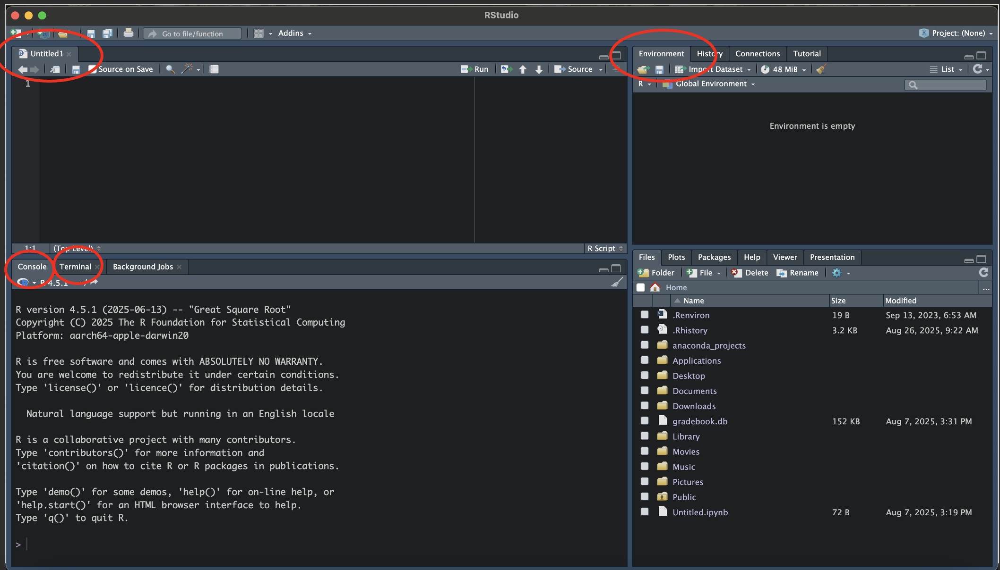
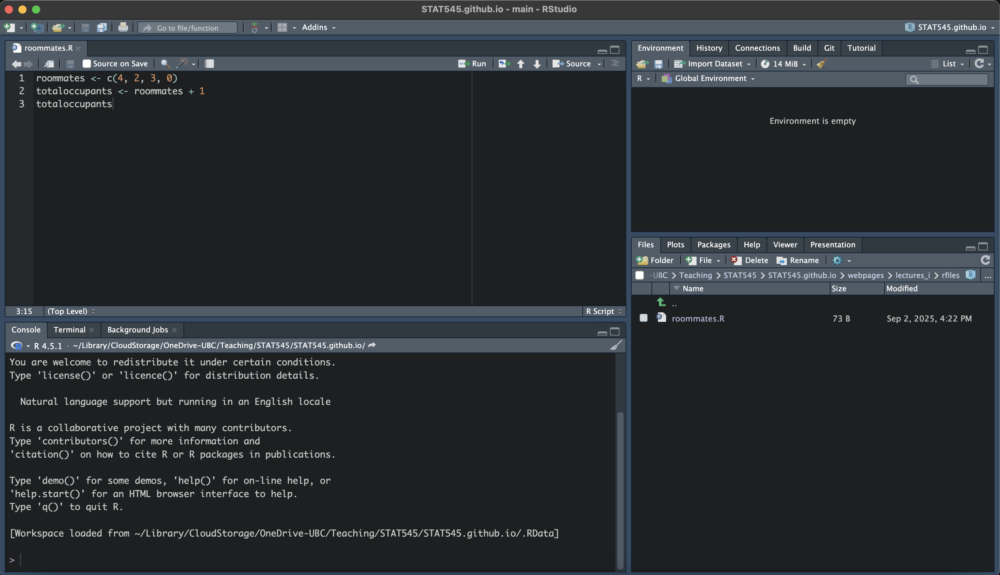
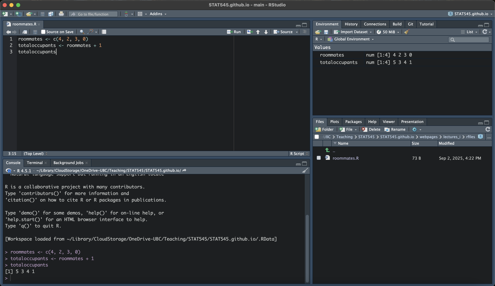
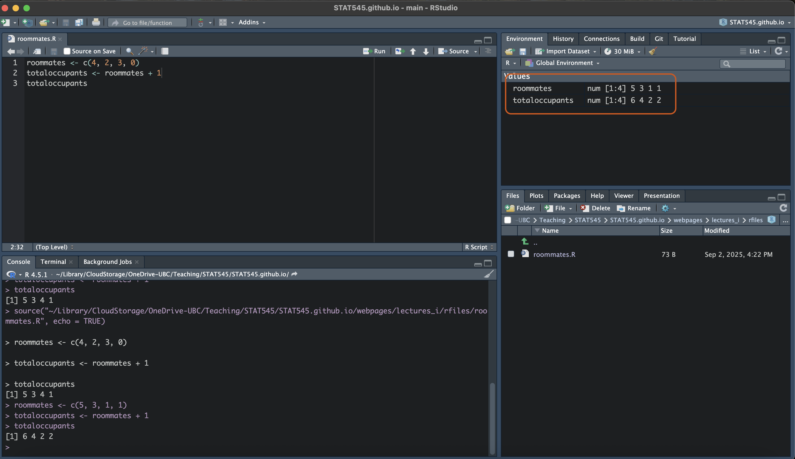

1 + 2[1] 3September 4, 2025
September 18, 2025
For today’s lecture, we are going to go through the some important information related to the course and jump right into some coding in R using an interactive worksheet and Jupyter Notebooks.
We will be using various technologies throughout this course which you should familiarize yourself with. The main platforms we’ll be using are;
The course website (this one!),
Canvas (for submitting assignments),
Slack (for communications),
RStudio (for writing R code) (Video Here!),
GitHub (for version control and collaboration), and
Jupyter notebooks (for interactive worksheets) (Video Here!).
If you’ve never used some of these before, that’s absolutely OK. This course is made to guide you through the basics of many of these platforms.
All of the important information is in the syllabus, which you can navigate to at the top of this page. There are a few items I’d like to emphasize:
STAT 545 A has frequent worksheets. They are relatively straight forward and will guide you through the topics we talked about that week.
Everyone gets one “pass” for a late worksheet. After the first occurrence, a 0 will be awarded for any late worksheet.
STAT 545 A has a mini data analysis and collaborative project worth most of your marks. These are not graded on the basis of how sophisticated your statistical analysis is, but on the quality of your code and workflow. A grading rubric will be posted for each.
There is a zero tolerance policy for late projects and analyses.
Stay home if you’re sick. Fill out an Academic Concession Self Declaration form (linked on Canvas) if you miss an assessment due to illness. Accommodations will be given on a case-by-case basis.
Bring a charged laptop to class!
All communications are to be done on Slack - do not email me questions unless they are of a sensitive nature (i.e., an academic concession form).
Don’t plagiarize code or assessments. This includes copying directly from LLM’s like ChatGPT.
But please - read the syllabus :)
Lectures for STAT545 are designed to be more interactive than a traditional statistics lecture. The class will begin with a short summary of the previous class, followed by an introduction to that day’s topic. For most of the lectures, we will be going through the interactive worksheets (yes, the ones that you receive marks for and yes, prior to the deadline). This will give provide you with dedicated time to work on the assessments in class with access to the instructor and the TAs.
Many lectures will have an accompanying video, which will be linked on the webpage and on our STAT545 YouTube Playlist.
Lectures build on top of each other and it is crucial to stay on track as we progress through this course.
Let’s get started! By this point, I’m assuming you’ve successfully installed R, RStudio, Github, and Jupyter notebooks. If you haven’t, check out the previous lecture for a guide to setting up this software.
Before diving into the worksheet, let’s talk about R. R is an open source programming language designed for statistical computing and data analysis. It is a commonly used programming language alongside Python and SAS, which we will not be covering in this course.
Check out this YouTube video for a short video lecture covering the basics of R Studio and R.
In its simplest form, R is a calculator. For example, we can type 1 + 2 in the console of R (we will be using RStudio) will spit out the answer of 3.
The [1] in the answer can be ignored for now.
R can also be used to do more complex expressions, such as \((450 - 15)^2/(5 + 7\times4)\), which we would write in R with:
R can also be used to store values as a variable. To assign a value to a variable in R, we use the <- symbol (the less than symbol followed by the minus sign). For example, if I wanted to store the number of apartments I’ve lived in since moving out for university, I could assign this to a variable called apartments_lived_in by:
Then, if I later wanted to use this value, I could simply execute
which you can see stores the value of 4! I can also do math on this variable, for example multiplying it by 2:
Variables can also store the results of expressions, which we will dive into in Worksheet 1.
R isn’t just a calculator. R can handle different data structures (which are just objects that contain data) including strings, vectors, and data frames (just to name a few). We will go over the basics of these structures in this section.
A string is a R (often called character data) is a string of characters enclosed in quotations. For example, I could store my name in a variable called name:
and access it later by typing name
Strings can also have white spaces and punctuation, such as
You can use single ' or double " quotation marks to wrap around the string - just be consistent!
In some worksheets, questions are multiple choice. Ensure that you type your answer as a string, i.e., my_answer <- "A".
A vector is an ordered list of items of the same type. A numeric vector is an ordered list of numbers.
Vectors are created in R using the c() function, with elements separated by commas. For example, suppose someone wanted to store the number of roommates they lived with in their four apartments. They had 4 roommates in their first apartment, then 2 in their next, followed by 3, and finally lived alone with 0 roommates. We can save this information in a vector named roommates using the following code:
To see the contents of a vector, simply type its name in the console and run the code
We can access each element of the vector by indexing it with []. In R, unlike some other programming languages, the index starts at 1. So if you’d like to access the first element of the vector, you can use [1]. For example, to see the number of roommates in my first apartment, I could use
Or view the number of roommates in my third apartment using:
We can also perform functions on vectors! Suppose we wanted to calculate the total number of occupants in each apartment (including myself). I need to add one person to each apartment! To do so, I can make a new variable called totaloccupants which is equal to roommates plus one:
We will dive more into functions on vectors in Worksheet 1.
A logical vector is a vector where the elements are a logical statement containing TRUE or FALSE. Let’s see how we can create a vector indicating whether or not there were more than two roommates in a given apartment. We can store this as a variable, named more_than_two_roommates using
From the output, you can see that this statement is true for apartments 1 and 3, indicating there were more than two roommates for these apartments.
R has a number of built in functions that are useful for exploring vectors. We can check the length (number of elements) of a vector using the length() function:
This answer makes sense as we had data for four apartments. We can also look at the types of data stored in vectors using the typeof function
[1] "double"[1] "double"[1] "logical"double is a type of numeric data. logical is the type of data that stores TRUE/FALSE.
Dataframes are a powerful tool for storing multidimensional data. For example, we could have data on housing for multiple people, including the rent paid, number of roommates, city, etc. Dataframes are a convenient way to store such information. Suppose we have data on three individuals stored in the dataframe housingdata. To access it, type housingdata in the R Console.
Name NumRooms NumOccupants Rent City
1 Grace 2 2 2700 Vancouver
2 Mei 3 4 5000 Toronto
3 Sam 1 1 1900 HalifaxWe see that Grace rents a 2 bedroom apartment, with two total occupants, and the total rent is $2700 per month in Vancouver. Mei lives in Toronto and has a 3 bedroom apartment shared between 4 people, and the total rent is $5000. Sam lives alone in a one bedroom apartment in Halifax, and pays $1900.
We will focus more on dataframes in a coming lecture, but I wanted to mention them here.
That’s great, but do I really have to run code one line at a time? No! RStudio provides us with an Integrated Development Environment (IDE) that allows you to save R Scripts (documents containing your R code). It’s free and open-source!
R Studio will look like this (mine is a dark theme):

I’ve highlighted some important pieces:
Console
Untitled1
an R Script (currently unsaved/untitled)
Saves your code
(P.S., You can create an R Script by going File > New File > R Script)
Terminal
Environment
It’s okay if your RStudio is configured differently! You can move the positions of some of these panes in the settings.
For any code you’d like to save, we write it in an R Script! Let’s create a file called roommates.R. In RStudio, go to File > New File > R Script. Now, go to File > Save As… and save it somewhere that makes sense for you (i.e., a STAT545 folder).
Instead of working line by line, let’s add the following (very simple) code to roommates.R to calculate the total number of occupants in each apartment lived in:
Save your work.
Your RStudio will look something like this:

To run the code, we can highlight it and click the “Run” button or click cmd/ctrl + Shift + Enter to run all code in the R Script. You will notice the code gets sent line by line to the Console, and the variables you created will now be in the Environment.

Now, anytime you want to run that code you have it right there! You can also edit the code and re-run it to update the variables.
The variables are stored in the environment. If you want to start fresh, you can click the broom button in the environment which will clear your variables. Then, run your code from top to bottom again.
Your landlord has decided that pets count as occupants! You’ve lived with a pet cat since you moved into your first apartment. Update the code in your roommates.R file to reflect this, and re-run it to get the new total number of occupants in each apartment.
Save the file.
Out of curiosity, you wanted to see how many occupants were in your friend’s apartment. You don’t really want to save this code, so you go to the Console to play around with the numbers. Your friend had 5 roommates in first year, then 3 in second year, then 1 roommate in third and fourth years. You execute the following code in the R Console (not touching roommates.R):
Did anything in your Environment change?
Well… even though you didn’t touch roommates.R, you overwrote the roommates and totaloccupants variables!

So remember, the console is not a separate (functionally) in R. Anything you do in the console will affect your variables in the environment. Of course, if we were to clear our environment and re-run the roommates.R file, we’d go back to our original data.
Those are the basics of RStudio! You will learn more as the course progresses.
Now it’s your turn to use R! Work through Worksheet A1 on your own and reach out on Slack if you have any issues. Refer to the previous lecture if you need guidance on how to access Worksheets on Jupyter Notebooks.
Worksheet A1 is NOT going to be graded. However, I highly recommend going through it to practice using Jupyter Notebooks and to get a handle on R. Future worksheets will be graded.
Some notes on Jupyter notebooks: - A terminal or command prompt window will pop up. Do not close it until you are finished with Jupyter. - Save often! - Sometimes OneDrive folders do not show up on Jupyter. Try saving in a folder on your Desktop if you have issues finding files. - To run code, highlight it and click the run (play) button or ctrl/cmd and enter
For more on Jupyter Notebooks and our worksheets, see this YouTube video!
Working with technology can be hard. Coding can be especially hard. Getting stuck is very common in both cases.
Before running to Slack, try searching for the answer yourself. This is an extremely important real-world skill! When you’re conducting your own analyses down the road, you may not have anyone to directly ask for help.
Try:
Googling your error codes (removing highly specific information like variable names)
Googling the problem (i.e., R dataframe can’t rename columns)
Search Stackoverflow and include the [r] tag. Or the [ggplot2] tag. Or the [plyr] tag. You get the idea.
Beware of AI tools: sometimes they’re helpful, and sometimes they’re not.
While I encourage you to search for answers on your own, don’t fret if you’re stuck. We’re here to help on Slack! Review the posting guidelines on the Syllabus so your questions go to the appropriate channel.
Comments
Comments are lines (or parts of lines) of code that R ignores. We specify them using
#. Commenting can be useful for documenting what you’re doing, or temporarily stopping a line from running. For example: